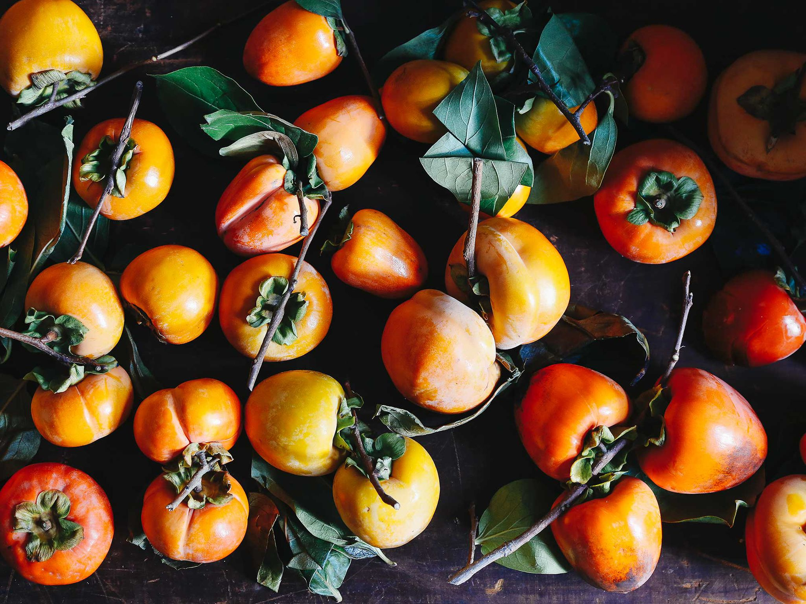

The word Diospyros comes from the ancient Greek
words “dios” and “pyron.” A popular etymology
construed this as “divine fruit.”

species
- Date-plum
Diospyros lotus
- Asian persimmon
Diospyros kaki
- Black sapote
Diospyros nigra
- American persimmon
Diospyros virginiana
- Texas persimmon
Diospyros texana
- Velvet Apple
Diospyros discolor